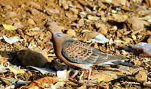
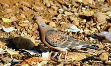

| Oriental Turtle Dove | |
|---|---|
|  | |
| Conservation status | |
| Binomial name | |
| Streptopelia orientalis (Latham, 1790) |
| Oriental Turtle Dove | |
|---|---|
|  | |
| Conservation status | |
| Binomial name | |
| Streptopelia orientalis (Latham, 1790) |
The Oriental Turtle Dove or Rufous turtle dove (Streptopelia orientalis) is a member of the bird family Columbidae, doves and pigeons.
It has two distinctive races, S. o. orientalis in the central Siberian taiga, and S. o. meena in open woodland in central Asia. Two white eggs, as for all pigeons and doves, are laid in a twig nest in a tree.
Southernmost populations are resident, but most other birds migrate south to winter in Pakistan and India, southeast Asia, and southern Japan. This species is a rare vagrant to northern and western Europe. S. o. orientalis occurs as a rarity in western Alaska and British Columbia.
This small species is very similar in plumage to its European counterpart, the Turtle Dove. It is a little larger than that species, particularly in the case of orientalis, about the same size as a Collared Dove. It shares the black and white striped patch on the side of its neck, but the breast is less pink, and the orange-brown wing feathers of Turtle Dove are replaced with a browner hue, and darker centres.
The tail is wedge shaped, again like the Turtle Dove, but S. o. orientalis has a grey tip to the tail. S. o. meena has a white tip to its tail like Turtle Dove. The flight is more relaxed and direct than that of its relative. The call is quite different from the purr of the Turtle Dove. It is a four-syllable her-her-oo-oo.
In the UK, the bird is extremely rare and has only been spotted on two occasions. On February 2011, the rare bird was spotted in someone's garden and the owner used the opportunity to charge a £5 fee to view the bird from his kitchen window and up to 500 people came along.[2]

{kind=link}